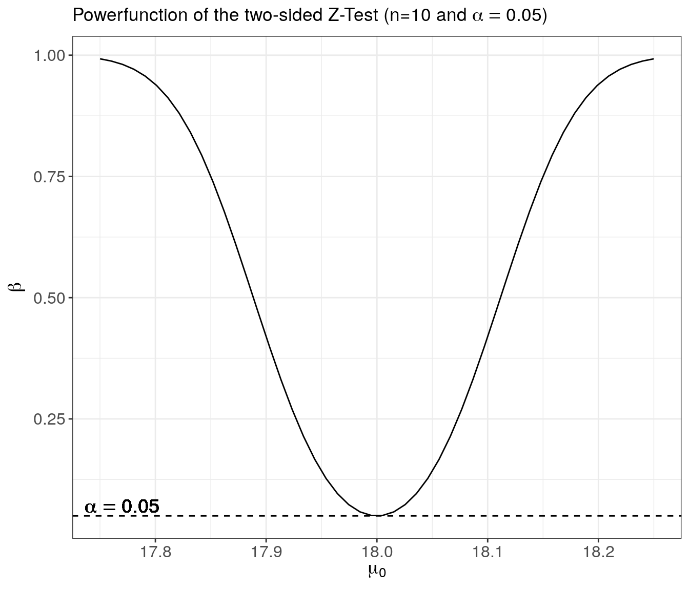

Ch. 2 Statistical Hypothesis Testing
2.1 Hypotheses and Test-Statistics
Assume an independently and identically distributed (i.i.d.) random sample \(X_1,\dots,X_n\), where the distributions of \(X_1,\dots,X_n\) depend on some unknown parameter \(\theta\in\Omega\), where \(\Omega\) is some parameter space.
General Testing Problem:
\[H_0:\theta\in\Omega_0\] against \[H_1:\theta\in\Omega_1\]
\(H_0\) is the null hypothesis, while \(H_1\) is the alternative. \(\Omega_0\subset\Omega\) and \(\Omega_1\subset\Omega\) are used to denote the possible values of \(\theta\) under \(H_0\) and \(H_1\). Necessarily, \(\Omega_0\cap\Omega_1=\emptyset\).
For a large number of tests we have \(\Omega=\mathbb{R}\) and the respective null hypothesis states that \(\theta\) has a specific value \(\theta_0\in\mathbb{R}\), i.e., \(\Omega_0=\{\theta_0\}\) and \(H_0:\theta=\theta_0\). Depending on the alternative one then often distinguishes between one-sided (\(\Omega_1=(\theta_0,\infty)\) or \(\Omega_1=(-\infty,\theta_0)\)) and two-sided tests (\(\Omega_1=\{\theta\in\mathbb{R}|\theta\neq \theta_0\}\)).
The data \(X_1,\dots,X_n\) is used in order to decide whether to accept or to reject \(H_0\).
Test Statistic: Every statistical hypothesis test relies on a corresponding test statistic \[T=T(X_1,\dots,X_n).\] Any test statistic is a real valued random variable, and for given data the resulting observed value \(T_{obs}\) is used to decide between \(H_0\) and \(H_1\). Generally, the distribution of \(T\) under \(H_0\) is analyzed in order to define a rejection region \(C\):
- \(T_{obs}\not\in C\) \(\Rightarrow\) \(H_0\) is not rejected
- \(T_{obs}\in C\) \(\Rightarrow\) \(H_0\) is rejected
For one-sided tests \(C\) is typically of the form \((-\infty,c_0]\) or \([c_1,\infty)\). For two-sided tests \(C\) typically takes the form of \((-\infty,c_0]\cup [c_1,\infty)\). The limits \(c_0\) and \(c_1\) of the respective intervals are called critical values, and are obtained from quantiles of the null distribution, i.e., the distribution of \(T\) under \(H_0\).
Decision Errors:
| Decision Errors | Verbal Definition | Formal Definition |
|---|---|---|
| Type I error | \(H_0\) is rejected even though \(H_0\) is true. | \(P(T\in C |\,H_0\text{ true})\) |
| Type II error | The test fails to reject a false \(H_0\). | \(P(T\not\in C |\,H_1\text{ true})\) |
2.2 Significance Level, Size and p-Values
Significance Level: In a statistical significance test, the probability of a type I error is controlled by the significance level \(\alpha\) (e.g., \(\alpha=5\%\)).
\[P\left(\text{Type I error}\right)=P\left(T\in C| \ H_0\text{ true}\right)\leq \alpha\]
Size: The size of a statistical test is defined as \[\sup_{\theta\in\Omega_0} P(T\in C|\theta\in\Omega_0).\]
That is, the preselected significance level \(\alpha\) is an upper bound for the size, which may not be attained (i.e., size \(<\alpha\)) if, for instance, the relevant probability function is discrete.
Practically important significance levels:
- \(\alpha=0.05\): It is common to say that a test result is “significant” if a hypothesis test of level \(\alpha=0.05\) rejects \(H_0\).
- \(\alpha=0.01\): It is common to say that a test result is “strongly significant” if a hypothesis test of level \(\alpha=0.01\) rejects \(H_0\).
p-Value: The p-value is the probability of obtaining a test statistic at least as “extreme” as the one that was actually observed, assuming that the null hypothesis is true.
- For one-sided tests:
- \(P(T\geq T_{\text{obs}}|H_0\text{ true})\) or
- \(P(T\leq T_{\text{obs}}|H_0\text{ true})\)
- For two-sided tests:
- \(2\min\{P(T\leq T_{\text{obs}}|H_0\text{ true}),\,P(T\geq T_{\text{obs}}|H_0\text{ true})\)
Remarks:
- The p-value is random as it depends on the observed data. That is, different random samples will lead to different p-values.
For given data, having determined the p-value of a test we also know the test decisions for all possible levels \(\alpha\):
- \(\alpha > \text{p-value} \Rightarrow H_0 \text{ is rejected }\)
- \(\alpha < \text{p-value} \Rightarrow H_0 \text{ is accepted }\)

Figure 2.1: From: https://xkcd.com/1478/
Example: Let \(X_i\sim N(\mu,\sigma^2)\) independently for all \(i=1,\dots,5=n\). Observed realizations from this i.i.d. random sample: \(X_1=19.20\), \(X_2=17.40\), \(X_3=18.50\), \(X_4=16.50\), \(X_5=18.90\). That is, the empirical mean is given by \(\bar X =18.1\).
Testing problem: \(H_0:\mu=\mu_0\) against \(H_1:\mu\ne\mu_0 17\) (i.e., a two-sided test), where \(\mu_0=17\).
Since the variance is unknown, we have to use a t-test in order to test \(H_0\). Test statistic of the t-test: \[T=\frac{\sqrt{n}(\bar X-\mu_0)}{S},\] where \(S^2=\frac{1}{n-1}\sum_{i=1}^n (X_i-\bar X)^2\) is the unbiased estimator of \(\sigma^2\). \[T_{obs}=\frac{\sqrt{5}(18.1-17)}{1.125}=2.187\] \[\Rightarrow \hbox{p-value}=2\min\{P(T_{n-1}\leq 2.187),\, P(T_{n-1}\geq 2.187)\}=0.094\]
The above computations in R
library("magrittr", quietly = TRUE)# for using the pipe-operator: %>%
X <- c(19.20, 17.40, 18.50, 16.50, 18.90)
mu_0 <- 17 # hypothetical mean
n <- length(X) # sample size
X_mean <- mean(X) # empirical mean
X_sd <- sd(X) # empirical sd
# t-test statistic
t_test_stat <- sqrt(n)*(X_mean - mu_0)/X_sd
# p-value for two-sided test
c(pt(q = t_test_stat, df = n-1, lower.tail = TRUE),
pt(q = t_test_stat, df = n-1, lower.tail = FALSE)) %>%
min * 2 -> p_value
p_value %>% round(., digits = 3)## [1] 0.094Of course, there is also a t.test() function in R:
t.test(X, mu = mu_0, alternative = "two.sided")##
## One Sample t-test
##
## data: X
## t = 2.1869, df = 4, p-value = 0.09402
## alternative hypothesis: true mean is not equal to 17
## 95 percent confidence interval:
## 16.70347 19.49653
## sample estimates:
## mean of x
## 18.12.3 The Power Function
For every possible value \(\theta\in\Omega_0\cup\Omega_1\), all sample sizes \(n\) and each significance level \(\alpha\) the corresponding value of the power function \(\beta\) is defined by the following probability: \[ \beta_{n,\alpha}(\theta):=P(H_0 \text{ is rejected, if the true parameter value equals }\theta) \]
Obviously, \(\beta_{n,\alpha}(\theta)\leq \alpha\) for all \(\theta\in\Omega_0\). Furthermore, for any \(\theta\in\Omega_1\), \(1-\beta_{n,\alpha}(\theta)\) is the probability of committing a type II error.
The power function is an important tool for accessing the quality of a test and for comparing different test procedures.
Conservative Test: If possible, a test is constructed in such a way that size equals level, i.e., \(\beta_{n,\alpha}(\theta)=\alpha\) for some \(\theta\in\Omega_0\). In some cases, however, as for discrete test statistics or complex, composite null hypothesis, it is not possible to reach the level, and \(\sup_{\theta\in\Omega_0}\beta_{n,\alpha}(\theta)<\alpha\). In this case the test is called conservative.
Unbiased Test: A significance test of level \(\alpha>0\) is called unbiased if \(\beta_{n,\alpha}(\theta)\ge\alpha\) for all \(\theta\in\Omega_1\).
Consistent Test: A significance test of level \(\alpha>0\) is called consistent if \[\lim_{n\rightarrow \infty} \beta_{n,\alpha}(\theta) =1\] for all \(\theta\in \Omega_1\).
Most Powerful Test: When choosing between different testing procedures for the same testing problem, one will usually prefer the most powerful test. Consider a fixed sample size \(n\). For a specified \(\theta\in\Omega_1\), a test with power function \(\beta_{n,\alpha}(\theta)\) is said to be most powerful for \(\theta\) if for any alternative test with power function \(\beta^*_{n,\alpha}(\theta)\), \[\beta_{n,\alpha}(\theta)\ge \beta^*_{n,\alpha}(\theta)\] holds for all levels \(\alpha>0\).
Uniformly Most Powerful: A test with power function \(\beta_{n,\alpha}(\theta)\) is said to be uniformly most powerful against the set of alternatives \(\Omega_1\) if for any alternative test with power function \(\beta^*_{n,\alpha}(\theta)\), \[\beta_{n,\alpha}(\theta)\ge \beta^*_{n,\alpha}(\theta)\quad \text{holds for all }\theta\in\Omega_1, \alpha>0\] Unfortunately, uniformly most powerful tests only exist for very special testing problems.
Example: Let \(X_1,\dots,X_n\) be an i.i.d. random sample. Assume that \(n=9\), and that \(X_i\sim N(\mu,0.18^2)\). Hence, in this simple example only the mean \(\mu=E(X)\) is unknown, while the standard deviation has the known value \(\sigma=0.18\).
Testing problem: \(H_0:\mu=\mu_0\) against \(H_1:\mu\neq \mu_0\) for \(\mu_0=18.3\) (i.e., a two-sided test).
Since the variance is known, a test may rely on the Gauss (or Z) test statistic: \[Z=\frac{\sqrt{n} (\bar X -\mu_0)}{\sigma} =\frac{3 (\bar X -18.3)}{0.18}\]
Under \(H_0\) we have \(Z\sim N(0,1)\), and for the significance level \(\alpha=0.05\) the null hypothesis is rejected if \[|Z|\geq z_{1-\alpha/2}=1.96,\] where \(z_{1-\alpha/2}\) denotes the \((1-\alpha/2)\)-quantile of the standard normal distribution. Note that the size of this test equals its level \(\alpha=0.05\).
For determining the rejection region of a test it suffices to determine the distribution of the test statistic under \(H_0\). But in order to calculate the power function one needs to quantify the distribution of the test statistic for all possible values \(\theta\in\Omega\). For many important problems this is a formidable task. For the Gauss test, however, it is quite easy. Note that for any (true) mean value \(\mu\in\mathbb{R}\) the corresponding distribution of \(Z\equiv Z_\mu=\sqrt{n(\bar X-\mu_0)}/\sigma\) is \[Z_\mu=\frac{\sqrt{n} (\mu -\mu_0)}{\sigma}+\frac{\sqrt{n} (\bar X -\mu)}{\sigma} \sim N\left(\frac{\sqrt{n} (\mu -\mu_0)}{\sigma}, 1\right)\] This implies that \[\begin{align*} \beta_{n,\alpha}(\mu) & = P\left(|Z_\mu|>z_{1-\alpha/2}\right)\\ & = 1-\Phi\left(z_{1-\alpha/2}-\frac{\sqrt{n} (\mu -\mu_0)}{\sigma}\right) + \Phi\left(-z_{1-\alpha/2}-\frac{\sqrt{n} (\mu -\mu_0)}{\sigma}\right), \end{align*}\]
where \(\Phi\) denotes the distribution function of the standard normal distribution.
Implementing the power function of the two-sided Z-test in R:
# The power function
beta_Ztest_TwoSided <- function(n, alpha, sigma, mu_0, mu){
# (1-alpha/2)-quantile of N(0,1):
z_upper <- qnorm(p = 1-alpha/2)
# location shift under H_1:
location_shift <- sqrt(n) * (mu - mu_0)/sigma
# compute power
power <- 1 - pnorm( z_upper - location_shift) +
pnorm(-z_upper - location_shift)
return(power)
}
# Apply the function
n <- 9
sigma <- 0.18
mu_0 <- 18.3
##
c(beta_Ztest_TwoSided(n = n, alpha = 0.05, sigma = sigma, mu_0 = mu_0, mu=18.35),
beta_Ztest_TwoSided(n = n, alpha = 0.05, sigma = sigma, mu_0 = mu_0, mu=18.50),
beta_Ztest_TwoSided(n = n, alpha = 0.01, sigma = sigma, mu_0 = mu_0, mu=18.50)) %>%
round(., digits = 3)## [1] 0.133 0.915 0.776Plotting the graph of the power function
suppressPackageStartupMessages(
library("tidyverse")
)
# Vectorize the function with respect to mu_0:
beta_Ztest_TwoSided <- Vectorize(FUN = beta_Ztest_TwoSided,
vectorize.args = "mu_0")
mu_0_vec <- seq(from = 17.75, to = 18.25, len = 50)
beta_vec <- beta_Ztest_TwoSided(n = 10,
alpha = 0.05,
sigma = 0.18,
mu = 18,
mu_0 = mu_0_vec)
beta_df <- data.frame("mu_0" = mu_0_vec,
"Beta" = beta_vec)
ggplot(data = beta_df, aes(x=mu_0, y=Beta)) +
geom_line() +
geom_hline(yintercept = 0.05, lty=2) +
geom_text(aes(x=17.77, y=0.07, label='alpha==0.05'), parse=TRUE, size=5) +
labs(title = expression(
paste("Powerfunction of the two-sided Z-Test (n=10 and ",alpha==0.05,")")),
x = expression(paste(mu[0])),
y = expression(paste(beta)), size=8) +
theme_bw() +
theme(axis.text = element_text(size=12),
axis.title = element_text(size=14))
This example illustrates the power function of a sensible test, since:
- Under \(H_0:\mu=\mu_0\) we have \(\beta_{n,\alpha}(\mu_0)=\alpha\).
- The test is unbiased, since \(\beta_{n,\alpha}(\mu)\geq\alpha\) for any \(\mu\neq\mu_0\).
- The test is consistent, since \(\lim_{n\rightarrow\infty} \beta_{n,\alpha}(\mu)=1\) for every fixed \(\mu\neq \mu_0\).
- For fixed sample size \(n\), \(\beta_{n,\alpha}(\mu)\) increases as the distance \(|\mu-\mu_0|\) increases.
- If \(|\mu-\mu_0|>|\mu^*-\mu_0|\) then \(\beta_{n,\alpha}(\mu)>\beta_{n,\alpha}(\mu^*)\).
- \(\beta_{n,\alpha}(\mu)\) decreases as the significance level \(\alpha\) of the test decreases. I.e., if \(\alpha>\alpha^*\) then \(\beta_{n,\alpha}(\mu)>\beta_{n,\alpha^*}(\mu)\).
Assuming that the basic assumptions (i.e., normality and known variance) are true, the above Gauss-test is the most prominent example of a uniformly most powerful test. Under its (restrictive) assumptions, no other possible test can achieve a larger value of \(\beta_{n,\alpha}(\mu)\) for any possible value of \(\mu\).
2.4 Asymptotic Null Distributions
Generally, the underlying distributions are unknown. In this case it is usually not possible to compute the power function of a test for fixed \(n\). (Exceptions are so called “distribution-free” tests in nonparametric statistics.) The only way out of this difficulty is to rely on large sample asymptotics and corresponding asymptotic distributions, which allow to approximate the power function and to study the asymptotic efficiency of a test. The finite sample behavior of a test for different sample sizes \(n\) is then evaluated by means of simulation studies.
For a real-valued parameter \(\theta\) most tests of \(H_0:\theta=\theta_0\) rely on estimators \(\hat\theta\) of \(\theta\). Under suitable regularity conditions on the underlying distribution, central limit theorems usually imply that \[\sqrt{n}(\hat\theta - \theta)\rightarrow_D N(0,v^2)\quad\text{as}\quad n\rightarrow\infty,\] where \(v^2\) is the asymptotic variance of the estimator.
Often a consistent estimator \(\hat v^2\) of \(v^2\) can be determined from the data. For large \(n\) we then approximately have \[\frac{\sqrt{n}(\hat\theta - \theta)}{ v}\overset{a}{\sim} N(0,1).\] For a given \(\alpha\), a one-sided test of \(H_0:\theta=\theta_0\) against \(H_1:\theta>\theta_0\) then rejects \(H_0\) if \[
Z=\frac{\sqrt{n} (\hat\theta -\theta_0)}{v}>z_{1-\alpha}.
\] The corresponding asymptotic approximation (valid for sufficiently large \(n\)) of the true power function is then given by \[
\beta_{n,\alpha}(\theta) = 1-\Phi\left(z_{1-\alpha}-\frac{\sqrt{n} (\theta -\theta_0)}{v}\right)
\]
Note that in practice the (unknown) true value \(v^2\) is generally replaced by an estimator \(\hat v^2\) determined from the data. As long as \(\hat v^2\) is a consistent estimator of \(v^2\) this leads to the same asymptotic power function. The resulting test is asymptotically unbiased and consistent.
Usually there are many different possible estimators for a parameter \(\theta\). Consider an alternative estimator \(\tilde\theta\) of \(\theta\) satisfying \[ \sqrt{n}(\tilde\theta - \theta)\rightarrow_D N(0,\tilde v^2) \quad\text{as}\quad n\rightarrow\infty. \] If the asymptotic variance \(v^2\) of the estimator \(\hat\theta\) is smaller than the asymptotic variance \(\tilde v^2\) of \(\tilde\theta\), i.e., \(v^2<\tilde v^2\), then \(\hat\theta\) is a more efficient estimator of \(\theta\). Then necessarily the test based on \(\hat\theta\) is more powerful than the test based on \(\tilde\theta\), since asymptotically for all \(\theta>\theta_0\) \[\begin{align*} \tilde\beta_{n,\alpha}(\theta) &= 1-\Phi\left(z_{1-\alpha}-\frac{\sqrt{n} (\theta -\theta_0)}{\tilde v}\right)\\ & < 1-\Phi\left(z_{1-\alpha}-\frac{\sqrt{n} (\theta -\theta_0)}{v}\right)=\beta_{n,\alpha}(\theta) \end{align*}\]
Example: Let \(X_1,\dots,X_n\) be an iid random sample. Consider testing \(H_0:\mu=\mu_0\) against \(H_1:\mu>\mu_0\), where \(\mu:=E(X_i)\). For a given level \(\alpha\) the t-test then rejects \(H_0\) if \[
T=\frac{\sqrt{n}(\bar X-\mu_0)}{S}>t_{n-1;1-\alpha},
\] where \(t_{n-1;1-\alpha}\) is the \(1-\alpha\) quantile of a t-distributions with \(n-1\)-degrees of freedom. This is an exact test if the distribution of \(X_i\) is normal. In the general case, the justification of the t-test is based on asymptotic arguments. Under some regularity conditions the central limit theorem implies that \[
\sqrt{n}(\bar X - \mu)\rightarrow_D N(0,\sigma^2)\quad\text{as}\quad n\rightarrow\infty
\] with \(\sigma^2=Var(X_i)\). Moreover, \(S^2\) is a consistent estimator of \(\sigma^2\) and \(t_{n-1;1-\alpha}\rightarrow z_{1-\alpha}\) as \(n\rightarrow \infty\). Thus even if the distribution of \(X_i\) is non-normal, for sufficiently large \(n\), \(T=\frac{\sqrt{n}(\bar X-\mu_0)}{S}\) is approximately \(N(0,1)\)-distributed and the asymptotic power function of the t-test is given by \[
\beta_{n,\alpha}(\theta) = 1-\Phi\left(z_{1-\alpha}-\frac{\sqrt{n} (\mu -\mu_0)}{\sigma}\right).
\]
2.5 Multiple Comparisons
In statistics, the multiple comparisons, multiplicity or multiple testing problem occurs when one considers a set of statistical inferences simultaneously or infers a subset of parameters selected based on the observed values. Errors in inference, including confidence intervals that fail to include their corresponding population parameters or hypothesis tests that incorrectly reject the null hypothesis are more likely to occur when one considers the set as a whole.
In empirical studies often dozens or even hundreds of tests are performed for the same data set. When searching for significant test results, one may come up with false discoveries.
Example: \(m\) different, independent test of significance level \(\alpha>0\). (Independence means that the test statistics used are mutually independent – this is usually not true in practice). Let’s assume that a common null hypothesis \(H_0\) holds for each of the \(m\) tests. Then
\[ P \begin{pmatrix} \text{Type I error}\\ \text{by at least} \\ \text{one of the $m$ tests} \end{pmatrix} = 1 - (1 - \alpha)^m =: \alpha_m>\alpha \]
Therefore, as \(m\) increases also the probability of a type I error increases:
| Number of tests \(m\) | Probability of at least one type I error (\(\alpha_m\)) |
|---|---|
| 1 | 0.050 |
| 3 | 0.143 |
| 5 | 0.226 |
| 10 | 0.401 |
| 100 | 0.994 |
Analogous problem: Construction of \(m\) many \((1-\alpha)\) confidence intervals. \[ P \begin{pmatrix} \text{at least one of the $m$ confidence} \\ \text{intervals does not contain} \\ \text{the true parameter value} \end{pmatrix} = 1 - (1-\alpha)^m>\alpha \]

Figure 2.2: From: https://xkcd.com/882/
This represents the general problem of multiple comparisons. In practice, it will not be true that all considered test statistics are mutually independent. (This even complicates the problem.) However, we will still have the effect that the probability of at least one falsely significant result increases with the number \(m\) of tests, but it will not be equal to \(1-(1-\alpha)^m\).
A statistically rigorous solution of this problem consists in modifying the constructions of tests or confidence intervals in order to arrive at simultaneous tests: \[ P\begin{pmatrix} \text{Type I error by} \\ \text{at least one of the $m$ tests} \end{pmatrix} \leq \alpha \] or simultaneous confidence intervals: \[\begin{align*} &P \begin{pmatrix} \text{At least one of the $m$ confidence} \\ \text{intervals does not contain} \\ \text{the true parameter value} \end{pmatrix} \leq \alpha\\[2ex] \Leftrightarrow\quad &P \begin{pmatrix} \text{All confidence intervals} \\ \text{simultaneously contain the} \\ \text{true parameter values} \end{pmatrix} \geq 1 - \alpha \end{align*}\]
For certain problems (e.g., analysis of variance) there exist specific procedures for constructing simultaneous confidence intervals. However, the only generally applicable procedure seems to be the Bonferroni correction. It is based on Boole’s inequality.
Theorem (Boole): Let \(A_1, A_2, \dots, A_m\) denote \(m\) different events. Then \[ P(A_1 \cup A_2 \cup \dots \cup A_m) \leq \sum_{i=1}^m P(A_i). \] This inequality also implies that: \[ P(A_1 \cap A_2 \cap \dots \cap A_m) \ge 1 - \sum_{i=1}^m P(\bar A_i), \] where \(\bar A_i\) denotes the complementary event “not \(A_i\)”.
Example: Bonferroni adjustment for \(m\) different tests of level \(\alpha^* = \alpha/m\). \[
P\begin{pmatrix}
\text{Type I error by} \\
\text{at least one of the $m$ tests}
\end{pmatrix}
\leq \sum_{i=1}^m \alpha^\ast = \alpha
\]
Analogously: Construction of \(m\) many \((1-\alpha^*)\)-confidence intervals with \(\alpha^* =\alpha/m\): \[\begin{align*} &P\begin{pmatrix} \text{At least one of the $m$ confidence} \\ \text{intervals does not contain} \\ \text{the true parameter value} \end{pmatrix} \leq \sum_{i=1}^m \alpha^\ast = \alpha\\[2ex] \Leftrightarrow\quad &P\begin{pmatrix} \text{All confidence interval} \\ \text{simultaneously contain the} \\ \text{true parameter values} \end{pmatrix} \geq 1 - \sum_{i=1}^m \alpha^\ast = 1 - \alpha \end{align*}\]
Example: Regression analysis with \(K=100\) regressors, where none of the variables has an effect on the dependent variable \(y\).
library("tidyverse", quietly = TRUE)
K <- 100
n <- 500
set.seed(123)
# Generate regression data, where none of the X-variables
# has an effect on the dependent variable Y:
my_df <- matrix(rnorm(n = n*K), nrow = n, ncol = K) %>%
as_tibble %>%
mutate(Y = rnorm(n)) %>%
select(Y, everything())
# OLS regression
OLS_result_df <- lm(Y ~ . , data = my_df) %>%
summary %>%
broom::tidy()
Count_Signif <- OLS_result_df %>%
filter(term != '(Intercept)') %>%
count(p.value < 0.05)| p.value < 0.05 | n |
|---|---|
| FALSE | 96 |
| TRUE | 4 |
2.6 R-Lab: The Gauss-Test
Let’s reconsider the simplest test statistic you will ever meet: The Gauss-Test (Or “Z-Test”).
Setup: Let \(X_1,\dots,X_n\) be an iid random sample with \(X_i\sim N(\mu,\sigma^2)\) and \(\sigma^2<\infty.\)
Idea: Under the above setup, \(\bar{X}_n=n^{-1}\sum_{i=1}^n X_i\) consistently estimates the (unknown) true mean value \(\mu\). That is, \(\bar{X}_n\to_p\mu\).
- Under the null hypothesis (i.e., \(\mu_{0}=\mu\)), the difference \(\bar{X}_n-\mu_{0}\) should be “small”.
- Under the alternative hypothesis (i.e., \(\mu_{0}\neq\mu\)), the difference \(\bar{X}_n-\mu_{0}\) should be “large”.
Under the null hypothesis \(H_0\) we have that \(\mu_{0}=\mu\). Therefore: \[
Z=\frac{\sqrt{n}\,(\bar{X}_n-\mu_{0})}{\sigma}=\underbrace{\frac{\sqrt{n}\,(\bar{X}_n-\mu)}{\sigma}}_{\sim N(0,1)}
\]
Under the alternative \(H_1\) we have that \(\;\mu_{0}\neq \mu\). Therefore: \[\begin{align*} Z&=\frac{\sqrt{n}\,(\bar{X}_n-\mu_{0})}{\sigma}\\ &=\frac{\sqrt{n}\,(\bar{X}_n-\mu_{0}+\mu-\mu)}{\sigma}\\ &=\frac{\sqrt{n}\,(\bar{X}_n-\mu)}{\sigma}+{\color{blue}{ \frac{\sqrt{n}\,(\mu-\mu_{0})}{\sigma} }} \sim N\left({\color{blue}{\frac{\sqrt{n}\,(\mu-\mu_{0})}{\sigma}}},1\right) \end{align*}\]
The different distributions (under \(H_0\) and \(H_1\)) of the test statistic \(Z\) can be investigated in the following dynamic plot:
Baltagi, B. 2008. Econometric Analysis of Panel Data. John Wiley & Sons.
F. Bretz, P. Westfall, T. Hothorn. 2010. Multiple Comparisons Using R. Chapman; Hall/CRC.
Fan, J., and I. Gijbels. 1996. Local Polynomial Modelling and Its Applications. 1. ed. Vol. 66. Monographs on Statistics and Applied Probability. Chapman & Hall/CRC.
Gałecki, A., and T. Burzykowski. 2013. Linear Mixed-Effects Models Using R: A Step-by-Step Approach. Springer.
Gelman, A., and J. Hill. 2006. Data Analysis Using Regression and Multilevel/Hierarchical Models. Cambridge University Press.
Greene, W.H. 2003. Econometric Analysis. Pearson.
Hastie, T., R. Tibshirani, and M. Wainwright. 2015. Statistical Learning with Sparsity: The Lasso and Generalizations. CRC press.
Hsiao, C. 2014. Analysis of Panel Data. Cambridge university press.
Li, Q., and J.S. Racine. 2007. Nonparametric Econometrics: Theory and Practice. Princeton University Press.
Romano, J.P., and M. Wolf. 2005. “Exact and Approximate Stepdown Methods for Multiple Hypothesis Testing.” Journal of the American Statistical Association 100 (469): 94–108.
Verbeke, G., and G. Molenberghs. 2000. Linear Mixed Models for Longitudinal Data. Springer.
Wand, M.P., and M.C. Jones. 1994. Kernel Smoothing. Vol. 60. Chapman & Hall/CRC.
White, H. 2014. Asymptotic Theory for Cconometricians. Academic press.
Y. Hochberg, A.C. Tamhane. 1987. Multiple Comparison Procedures. Wiley Series in Probability; Statistics.